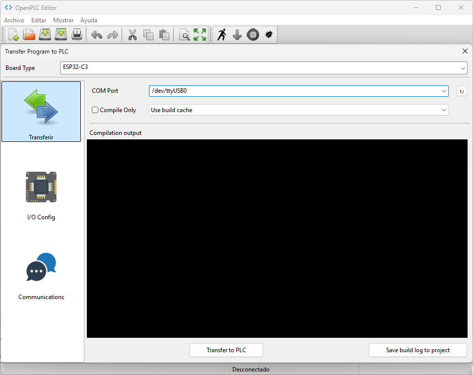
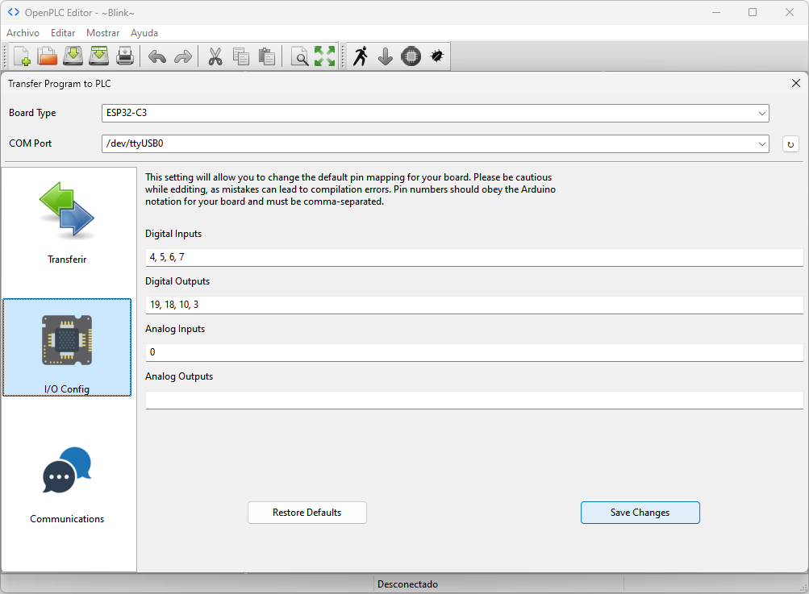

Este módulo integra el dispositivo Arduino UNO R3 para obtener una plataforma de desarrollo compatible con OpenPLC, dotada de comunicación WiFi para el desarrollo de aplicaciones IoT.
Antes de comenzar a programar se debe configurar el entorno OpenPLC para poder compilar y cargar los programas adecuadamente en el Arduino UNO R3.
Iniciar OpenPLC y verificar si existen actualizaciones desde el menú Archivo-->Check for updates....

Seleccionar el dispositivo controlador en el menú Board Type y el puerto de comunicación en el menú COM Port.

Mapear los pines correspondientes a las entradas y las salidas del controlador.

Cargar el programa en la placa Arduino UNO R3 (verificar que haya seleccionado el puerto correspondiente).
Esperar a que el programa indique que el sketch ha sido subido a la placa Arduino UNO R3.

1 - Entradas y salidas digitales


2 - Control motor DC


3 - Control relé electromecánico

Nota: Este circuito funciona con el código del proyecto 2
4 - Control relé de estado sólido

Nota: Este circuito funciona con el código del proyecto 2
5 - Control TRIAC

Nota: Este circuito funciona con el código del proyecto 2
6 - Control contactor

Nota: Este circuito funciona con el código del proyecto 2
7 - Temporizadores (TON, TOF, TP)


8 - Ejemplo Blink

9 - Contadores (CTU, CTD, CTUD)

10 - Entrada análoga


11 - Salida análoga (PWM)


12 - Comunicación One Wire: sensor DS18B20


13 - MQTT